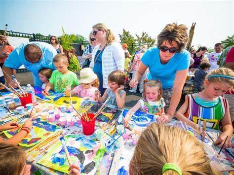

Home National Football Museum Halloween Events Manchester Christmas Market Family Events
Elementary, Messy Art Night is about trying new materials, being creative, and having fun. Kids can try pottery, wire sculpture, oil painting, and mosaics. The free-for-all environment is a refreshing change from more structured craft activities. This can be fun to take your kids too.
